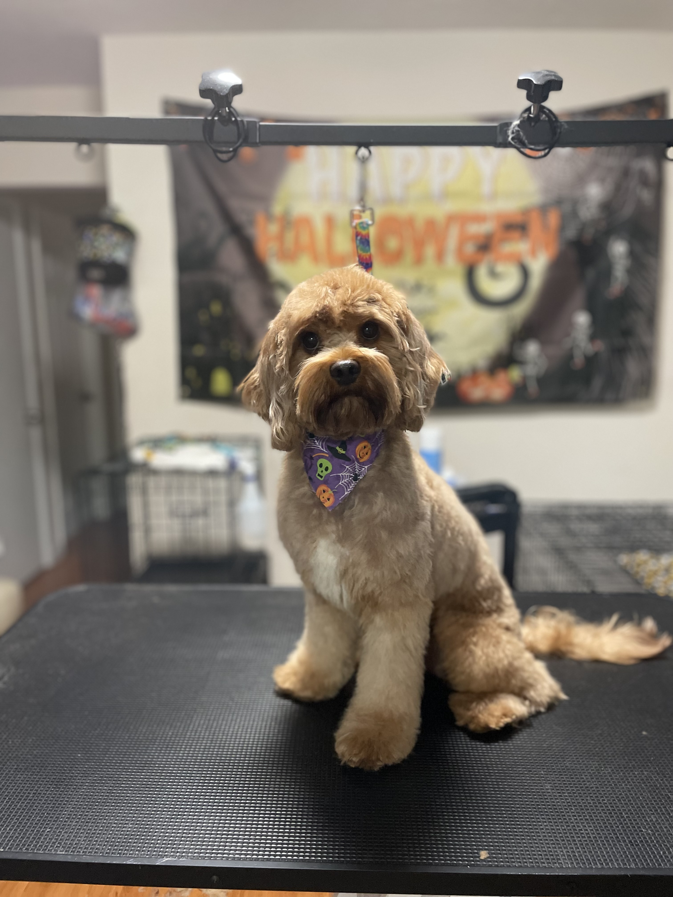

Can you believe this cutie is still a puppy?! He came into our salon very matted so we did a Deshed Haircut/bath package to loosen up
the knots in his coat. This process involved alot of brushing and scissoring! He's feeling refreshed and rejuvenated now!
Hello!
Welcome to the F urever F luffy family, where we treat your furry friend like our own and tend to all
necessary grooming needs. F urever F luffy is a luxurious dog grooming salon that is dedicated to providing
exceptional grooming services. It is a certifiably safe, caring and stress-free area where your dog can
come to relax and leave feeling brand new! F urever F luffy offers an inclusive variety of grooming services
that accommodate all unique needs for any breed. The F urever F luffy team is devoted to make sure your fluffy
friend is healthy and of course happy. All products that are used in the salon are only but the best of
quality, pet-safe products and professional grade grooming equipment. F urever F luffy's objective is to
ensure your fur baby has a positive experience, ensuring they leave the salon with their tail wagging.